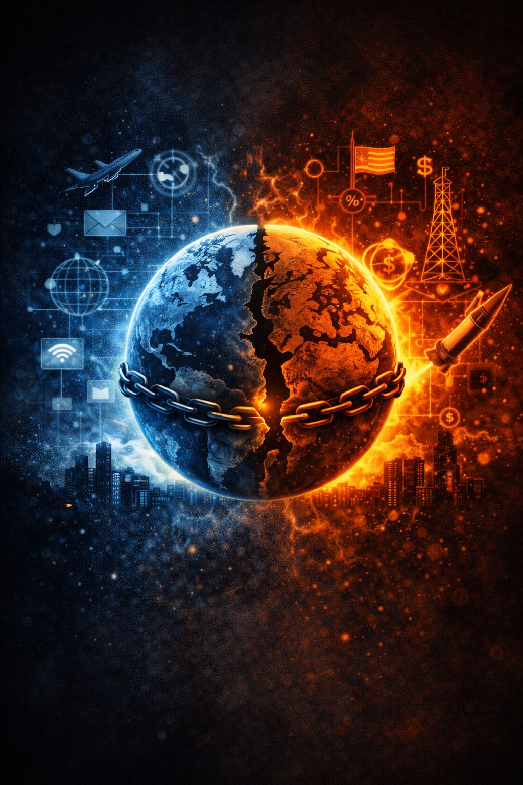

Once symbolic figures become stand-ins for identity and survival, the digital ecosystem takes over.
The internet is not neutral.
It amplifies emotional energy, especially energy tied to:
In this environment, symbolic figures are not merely sustained by attention.
They are built from it.
The first rule of the digital world is simple:
Attention equals life.
Visibility keeps a figure culturally alive.
Invisibility slowly dissolves influence.
Social platforms are organized around engagement systems that reward:
These systems do not prioritize:
They prioritize emotional activation.
Within digital systems, even negative attention functions as nourishment.
Scandals, outrage, and backlash may appear destructive from the outside.
But algorithmically, they increase circulation.
Infamy and admiration travel through the same engagement pipelines.
Both sustain visibility.
Both keep the symbolic figure alive in collective awareness.
This creates what can be called:
👉 The Immortality Economy
An ecosystem where symbolic figures preserve relevance not through virtue or truth, but through emotional centrality.
Every controversy becomes:
Every argument says:
“The symbol still matters.”
Each reaction embeds the figure deeper into cultural memory.
Criticism frequently activates identity defense instead of collapse.
Followers reinterpret attacks as evidence of importance:
“If they’re being targeted, they must be dangerous to the system.”
“If people hate them this much, they must be telling the truth.”
“The enemy fears our champion.”
The symbolic figure transforms into:
This is one of the core paradoxes of digital symbolism:
👉 attempts to destroy a symbol can strengthen it.
This process can be described as:
👉 Narrative Paradox
Opposition reinforces the very thing it attempts to erase.
Supporters and critics both contribute:
The symbolic figure survives because conflict keeps the narrative alive.
Platforms thrive on polarization because conflict generates continuous engagement.
Controversial symbolic figures inspire endless streams of:
The figure becomes:
👉 a perpetual motion machine of attention
Meaning is continuously extracted from conflict.
The immortality economy feeds on two psychologically comforting illusions:
The group begins believing:
“We cannot survive without them.”
The brain unconsciously equates:
“Everyone is talking about them”
with
“They must matter.”
Both illusions soothe existential uncertainty.
As long as the symbol remains active, the identity attached to it feels alive and protected.
In older societies, immortality was pursued through:
In digital society, symbolic immortality is often measured through:
The symbolic figure survives as long as someone continues circulating the narrative.
Sometimes long after the original human being loses control of their own image.
A digital ecosystem where visibility substitutes for symbolic survival and cultural continuity.
The phenomenon in which attempts to destroy a symbol reinforce its relevance and power.
The idea that engagement metrics function as life support systems for symbolic figures online.
The internet rewards emotional centrality over stability.
Symbols survive not because they are accurate, wise, or ethical, but because they remain psychologically active inside collective attention.
In the immortality economy, relevance itself becomes a form of survival.
And every reaction, supportive or hostile, helps keep the symbolic engine running.